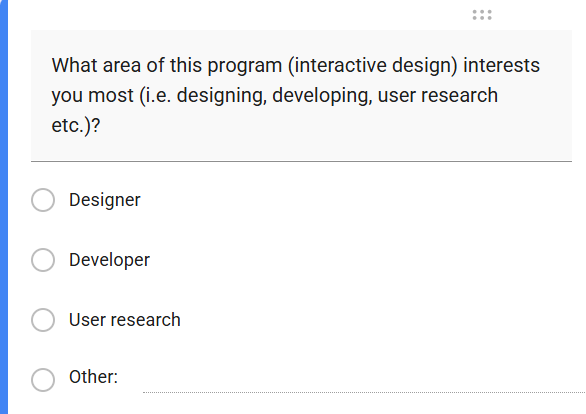
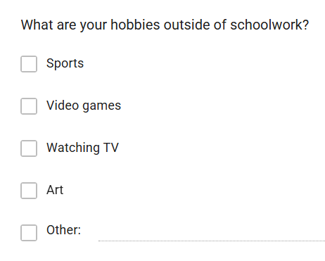
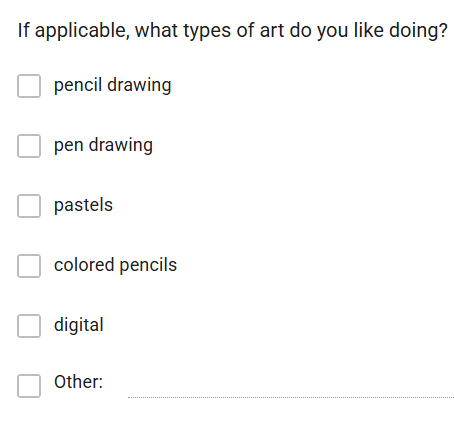
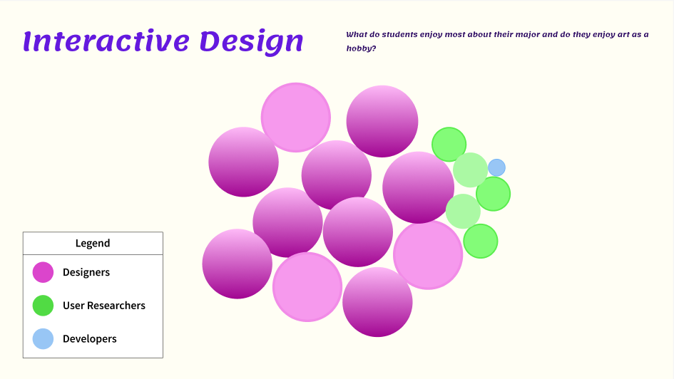
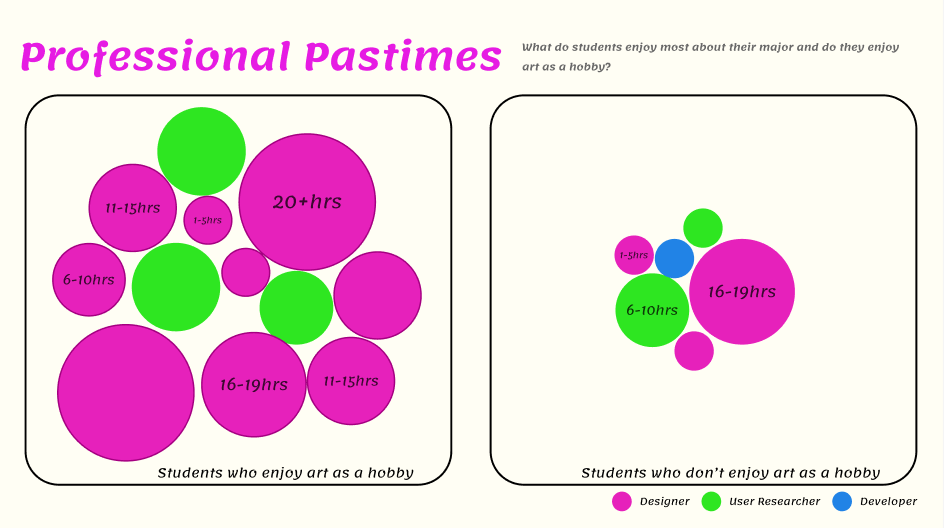
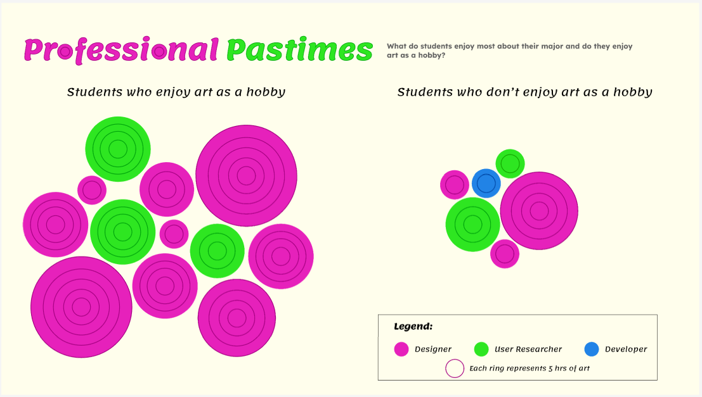

Process
Before I could begin designing, I created a hypothesis about the students in my class.
Hypothesis: The majority of Interactive Design students desire to be designers, and those students enjoy art as a hobby.




I started my design process by browsing through various charts and graphs I could use to show my data. The first type I tried was a square grid divided into 100 squares. I then took the percentage of people who had chosen designers and colored that many squares pink. Then I did the same except green for user researchers and blue for developers. But this idea did not have a good clear way for me to show whether they like art or not. I tried making the percentages of the students who liked art a solid shape, but in the middle of the grid, it did not look right.
I then decided to do a bubble cluster chart where each student was represented by 1 bubble. That bubble was then colored based on their career preference, pink for designer, green for user researcher, and blue for developer. I chose these colors because pink represents art and design, green represents research, and blue is generally associated with coding. For the first iteration of my visualization, I displayed one thing, which career field each student enjoys. I did this using color.


I then added grouping into my design by grouping the people who enjoy art on one side and the people who do not on the other. To fill out the design and make it less basic, I added how many hours students spend doing art per week. This was an approximate total that I got from combining their times between time spent on art as a hobby and time spent on art for school purposes. For the first iteration, I did this by putting the time as text on the circles.

Through a suggestion from my professor, I decided to use rings to represent the hours students spent doing art. I made each ring equal 5 hours. I had a broad range of data, from students who did less than hours of art, to students who did 20+ hours of art. I chose to use an increment of 5 so that the most rings a bubble might have is 5.
At this point, I had an in-class critique session, where my class was split into small groups and we gave each other feedback. From this feedback, I changed two main things about my design. One, I changed my background to a dark background, and two, I changed my title to "Creative Professionals" to better reflect art. I made two other small final detail changes. One, I organized the clusters into a loose spiral. The other change I made was I made the bubble end at the final ring, that change made the rings easier to count.